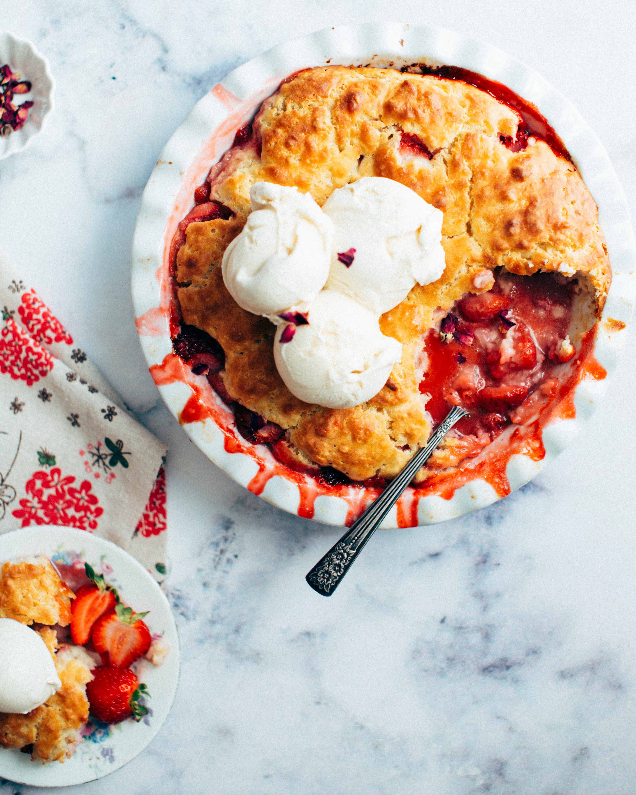

Chocolate Chip Cookies
- 2 1/4 cups of flour
- 1 tbs baking soda
- 1 tbs salt
- Mix together and set aside
- 1 cup of softened butter-2sticks
- 3/4 cup of sugar
- 3/4 cup of packed brown sugar
- 1 tbs vanilla extract
- 2 large eggs
- Mix until creamy
- Add eggs one at a time
- Gradually beat in flour mixture
- Stir in 1 3/4 chocolate chips
- Scoop 1 tbs of mixture onto cookiesheet
- Bake at 375 degrees for 9-11 minutes
- Makes about 5 dozen cookies

Strawberry Rhubarb Pie
-
Crust
- 2 cups of flour
- Dash of salt
- 3/4 cup of shortening
- Cut shortening into flour
- Add 1/4-1/2 cup of water
- Divide in half and roll each half out (1 bottom and 1 top)
- Put 1 crust on bottom of pie plate Filling
- 3 cups pf rhubarb cut up
- 1 cup of stawberries cut up
- 1 cup of sugar
- 2 tbs tapioca
- Mix together
- Place filling in pie pan
- Place top crust over filling and pinch the two crusts together
- Bake at 400 degrees for 40 minutes
- Serve hot with ice cream

Brownies
- 1 brownie mix
- 3tbs water
- 1/2 cup of vegetable oil
- 2 eggs
- Stir together
- Place in 9x9 pan
- Bake at 350 degrees for 35 minutes
- Drizzle fudge on top